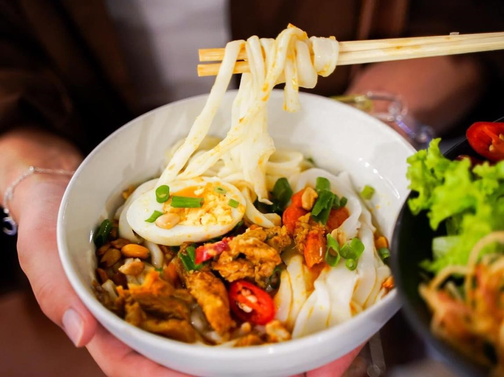
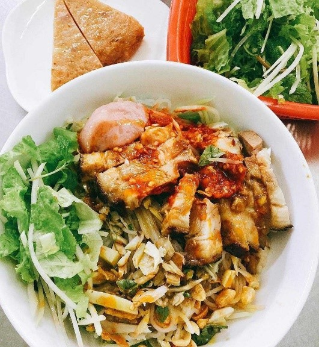
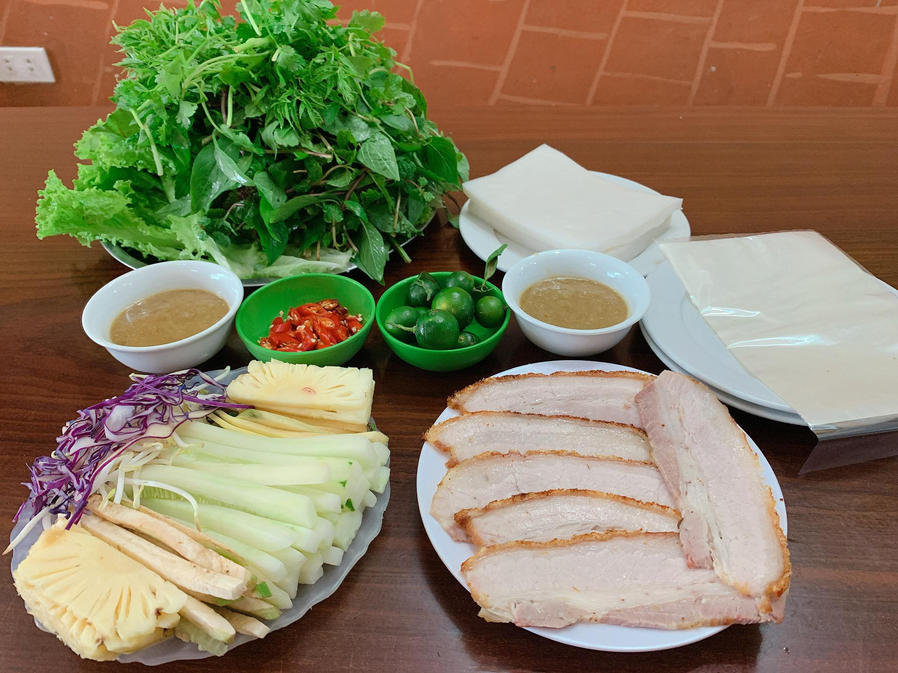
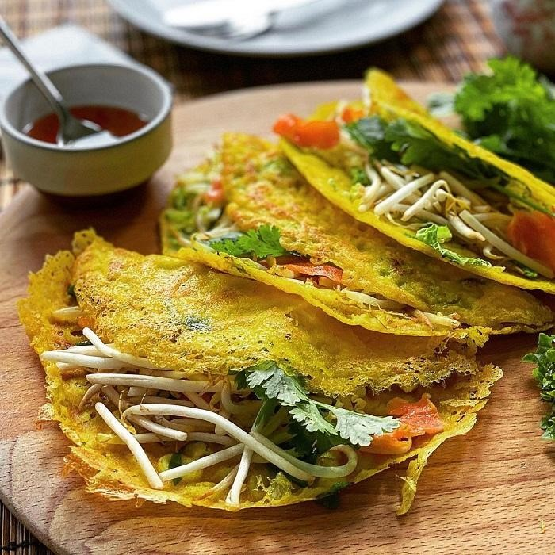
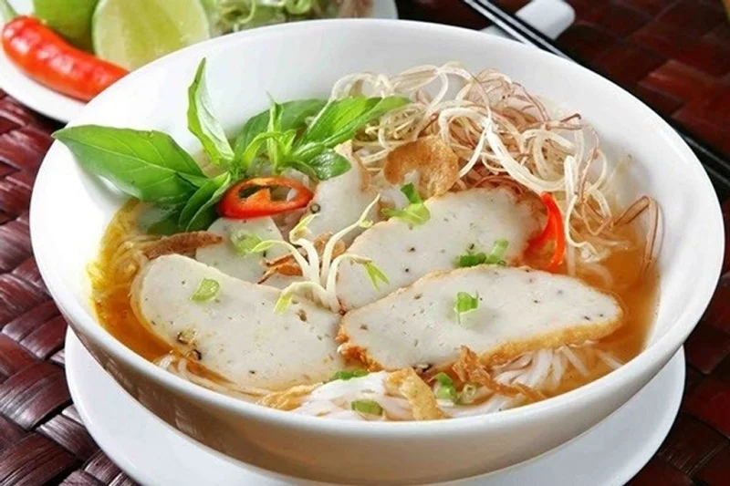
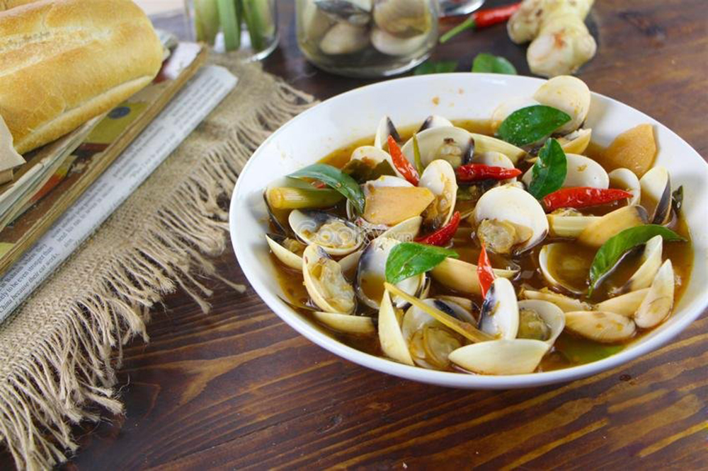
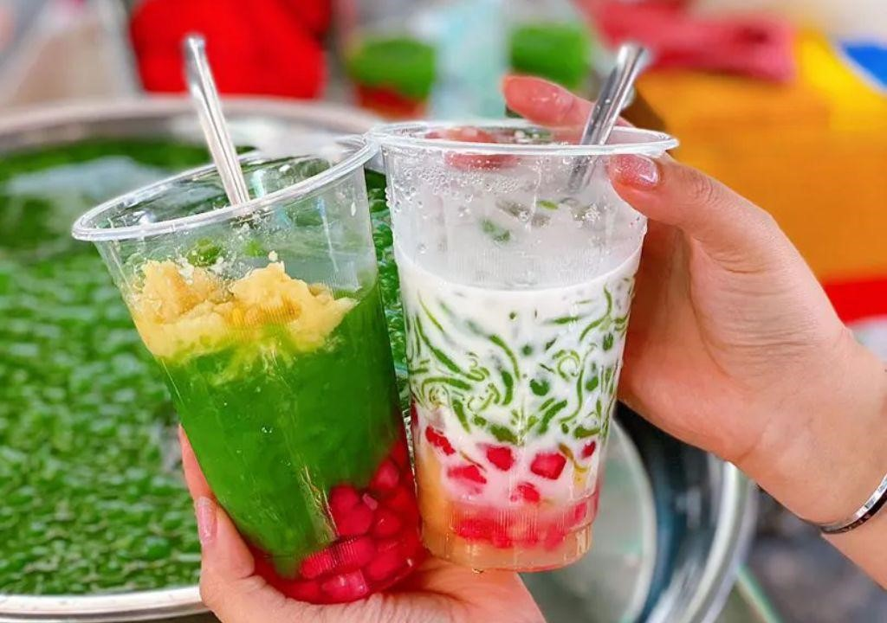
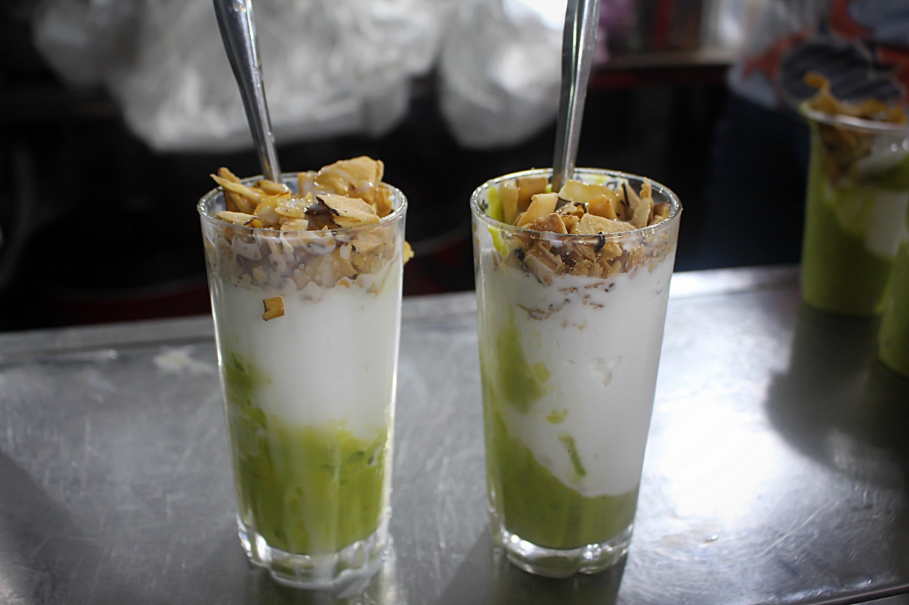

|
|
| Giá vé | Du lịch | Ẩm thực | Văn hóa | Giới thiệu |
1.Mì Quảng -Mì Quảng là một trong những món ăn đặc sản nổi tiếng của Đà Nẵng. Món ăn được làm từ sợi mì gạo mềm, ăn kèm với tôm, thịt, trứng và các loại rau sống tươi ngon. Điểm đặc biệt của mì Quảng là phần nước dùng đậm đà nhưng chỉ được chan một lượng vừa phải. Khi thưởng thức cùng bánh tráng nướng và đậu phộng rang, món ăn tạo nên hương vị thơm ngon, hấp dẫn. Đây là món ăn mà nhiều du khách không thể bỏ qua khi đến Đà Nẵng. |
2.Bún mắm nêm -Bún mắm nêm là món ăn đặc sản nổi tiếng của Đà Nẵng. Món ăn gồm bún tươi, thịt heo quay hoặc thịt luộc, rau sống, đậu phộng rang và đặc biệt là mắm nêm đậm đà. Sự kết hợp giữa vị mặn, ngọt, cay và thơm của mắm nêm tạo nên hương vị đặc trưng khó quên đối với du khách. |
3.Bánh tráng cuốn thịt heo Một trong những món ăn đặc sắc làm nên tên tuổi của ẩm thực Đà Nẵng là bánh tráng cuốn thịt heo. Món ăn gồm thịt heo luộc, bánh tráng, rau sống tươi xanh và mắm nêm đậm đà. Sự kết hợp hài hòa giữa các nguyên liệu tạo nên hương vị thơm ngon, hấp dẫn và khó quên đối với du khách. |
4.Bánh xèo -Bánh xèo Đà Nẵng là một món ăn đặc sản được nhiều du khách yêu thích khi đến với thành phố biển. Bánh có lớp vỏ vàng giòn được làm từ bột gạo, bên trong là nhân tôm, thịt và giá đỗ. Khi thưởng thức, bánh được cuốn cùng rau sống và chấm với nước chấm đậm đà, tạo nên hương vị thơm ngon đặc trưng. |
5.Bún chả cá -Bún chả cá là món ăn đặc sản nổi tiếng của Đà Nẵng. Món ăn gồm những sợi bún mềm, chả cá dai ngon cùng nước dùng ngọt thanh được nấu từ cá và các loại rau củ. Hương vị đậm đà, thơm ngon của bún chả cá đã chinh phục nhiều du khách khi đến với thành phố biển Đà Nẵng. |
6.Chíp chíp xào sả ớt -Chíp chíp hấp sả ớt là món hải sản dân dã được nhiều người yêu thích khi đến Đà Nẵng. Món ăn được chế biến từ chíp chíp tươi, hấp cùng sả và ớt tạo nên hương thơm hấp dẫn cùng vị ngọt tự nhiên của hải sản. Với hương vị đậm đà và cách chế biến đơn giản, chíp chíp hấp sả ớt đã trở thành một món ăn đặc trưng của thành phố biển Đà Nẵng. |
7.Chè xoa xoa hạt lựu Chè xoa xoa hạt lựu là một món tráng miệng nổi tiếng của Đà Nẵng, đặc biệt được yêu thích vào những ngày hè nóng bức. Món chè gồm xoa xoa (thạch làm từ rau câu), hạt lựu giòn dai, nước cốt dừa béo thơm và đá lạnh mát rượi.Đây là món ăn dân dã gắn liền với tuổi thơ của nhiều người dân Đà Nẵng. |
8.Kem bơ -Kem bơ là món tráng miệng được nhiều du khách yêu thích khi đến Đà Nẵng. Món ăn được làm từ bơ chín xay nhuyễn kết hợp với kem mát lạnh, tạo nên hương vị béo ngậy nhưng không quá ngọt. Kem bơ không chỉ thơm ngon mà còn rất thích hợp để thưởng thức trong những ngày hè nóng bức |
Contact: tuyetmai121119@gmail.com